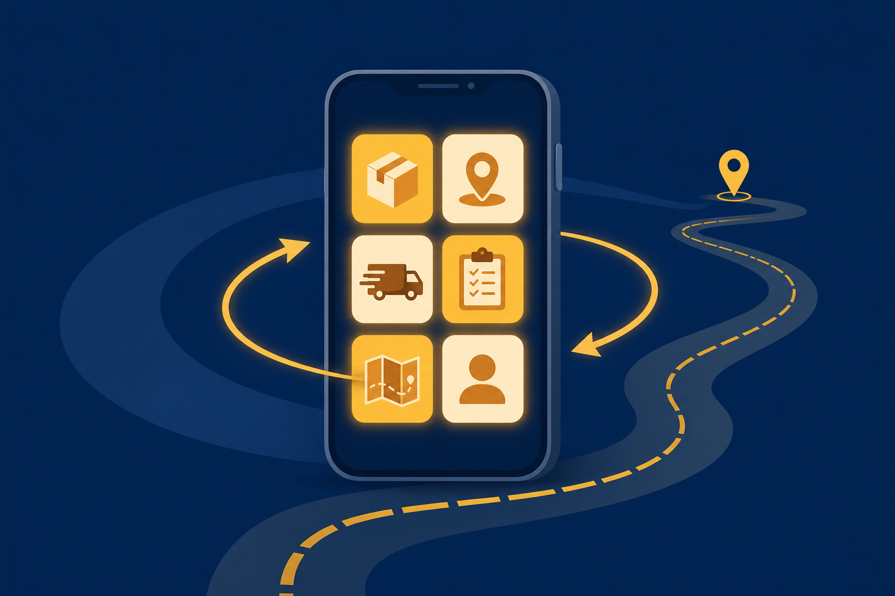
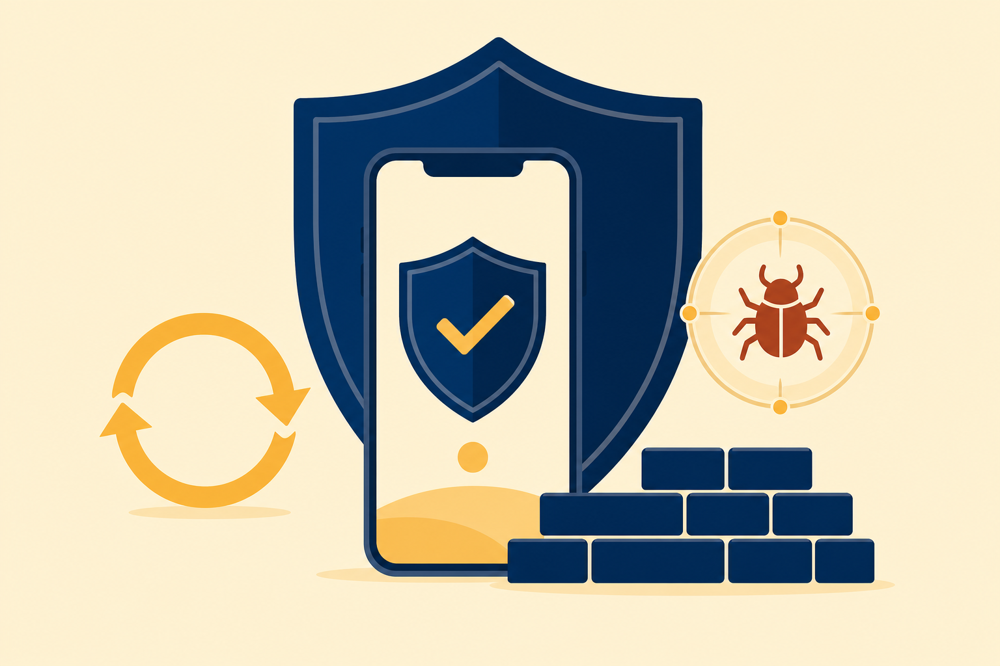
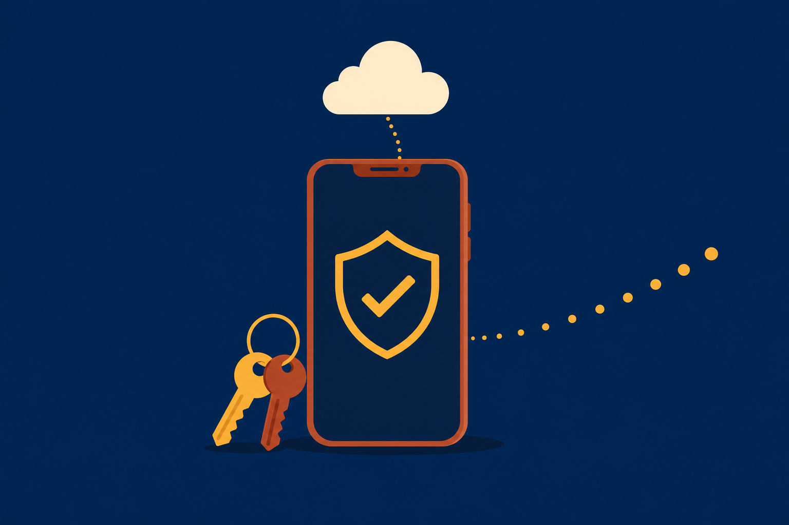

01
Secure
the mobile OS: screen locks, updates, MDM policy, and encrypted, backed-up data.

Mobile OS security, software troubleshooting, and the day a company phone goes missing: supporting the fleet that rides in a pocket.
Start here: Picture your own phone in a stranger’s hands right now. What is the first thing you would want to stop them from opening?
the mobile OS: screen locks, updates, MDM policy, and encrypted, backed-up data.
the OS and its apps when they slow down, crash, or refuse to install.
to security symptoms: rooted devices, untrusted app sources, and leaking data.
One company phone rides the whole class. It tracks shipments and keeps a driver connected on the road, so it cannot afford a bad day.
Nothing on it is secured yet.
PHX-217 gets all three before it leaves the depot.

Your phone on the corporate network. The company could require access for monitoring.
COPE, but you pick the device type: Android or iPhone.
Business owned. Personal activities like social media are allowed under the AUP.
Business owned and for business use only.
EMM manages the device. MDM is the arm that applies the security policy.
With a partner: Name the EMM model behind each phone, and the one detail that separates the last two models.
Something you know
Something you have
Two different credentials
A backup to a local computer works too.
PHX-217’s shipment records: encrypted in place, and copied off the phone.
Wipe without fear: the data is encrypted on the phone and safe in the backup.
With a partner: Choose your first remote action and your last one. Then name the two 20.1 controls that make the last one safe.
Reboot clears temporary faults, so it opens almost every one of these tickets.
Watch out: airplane mode cuts cellular, Wi-Fi, Bluetooth, and NFC all at once. Rule it out first.
With a partner: Name your first two moves in order, plus the settings path the first one lives at.
Root-level access that bypasses controls.
BypassAdministrative access that bypasses controls.
BypassDiagnostic data access and advanced configuration. Not rooting, not jailbreaking.
Not a bypassAndroid permits sideloading. iOS prefers its store, with EU rules opening third-party stores.
Apps from this source can put the phone and its data at risk.
Enrolled, locked, encrypted, and backed up: PHX-217 lost nothing but hardware, and the backup restored to its replacement.
Security set up early is the security that answers late.
Name the four EMM ownership models, and the one that allows no personal use.
The phone is missing: name the three remote actions in the order you would try them.
Root, jailbreak, developer mode: which one is not a bypass, and what is it for?

Next step: Run the CertMaster labs: Configure Remote Wipe and Connect to WiFi. Module 21 turns to data security: backup, recovery, and data handling.